Primeros Auxilios
Evaluación Primaria, Conciencia, Respiración y Pulso
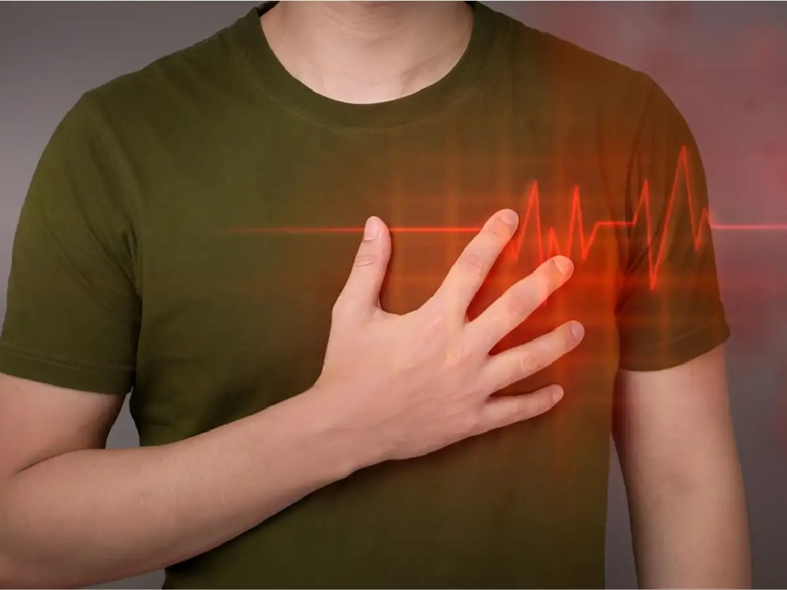
Paro Cardiorrespiratorio, RCP Básico y Uso de DEA
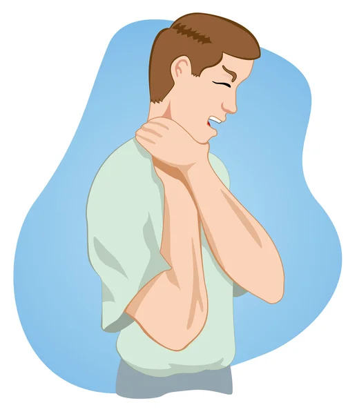
Obstrucción de la Vía Aérea por Cuerpo Extraño
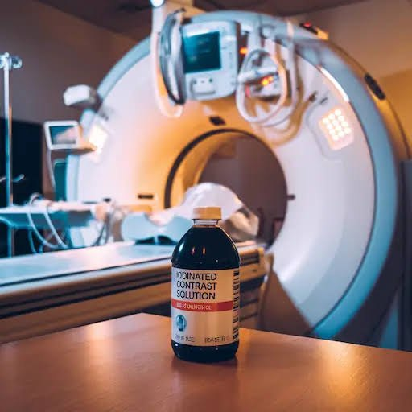
Reacciones Adversas a Medios de Contraste
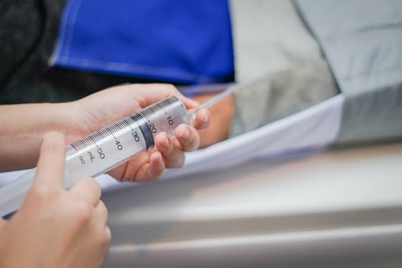
Extravasación de Medio de Contraste Endovenoso
Lipotimia, Síncope Vasovagal e Hipoglicemia por Ayuno
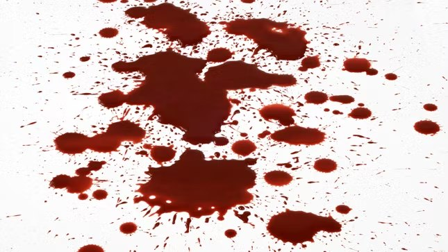
Control de Hemorragias, Estado de Shock y Caídas en Sala
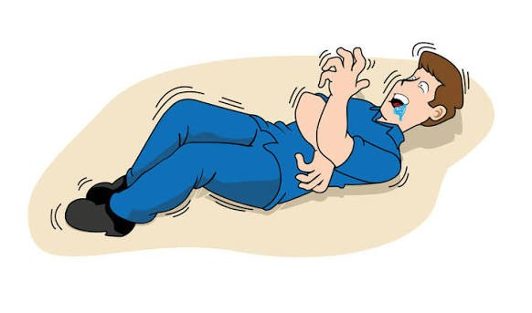
Crisis Convulsiva y Posición Lateral de Seguridad
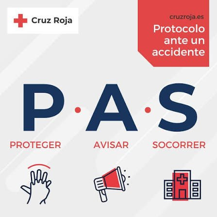
Conducta PAS y XABCDE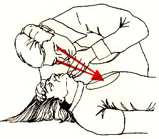
Conciencia, Respiración y PulsoEvaluación Primaria, Conciencia, Respiración y Pulso
• Proteger: Asegura primero el entorno antes de intervenir; detén la emisión de rayos X o el desplazamiento del gantry, y en Resonancia Magnética ten siempre presente el campo magnético permanente.
• Avisar: Pide ayuda de inmediato al equipo médico o de enfermería del servicio, o activa la Clave Azul intrahospitalaria.
• Socorrer: Comienza la valoración primaria ordenada del paciente mientras llega el apoyo.
Acércate al paciente, toca suavemente sus hombros y háblale en voz clara preguntando si se encuentra bien:
• A — Alerta: Está despierto, orientado y responde de forma espontánea.
• V — Verbal: Responde únicamente cuando le hablas.
• D — Dolor: Reacciona solo ante un estímulo doloroso, como presión en el trapecio o lecho ungueal.
• I — Inconsciente: No responde a ningún estímulo; pide ayuda de inmediato.
Observa si el tórax se expande y escucha o siente el flujo de aire tras permeabilizar la vía aérea con maniobra frente-mentón, siempre que no exista sospecha de trauma cervical:
• Frecuencia Respiratoria Normal en Adulto: 12 a 20 respiraciones por minuto.
• Signos de Alarma: Ausencia de respiración o apnea, boqueo agónico o gasping que equivale a paro cardiorrespiratorio, bradipnea bajo 12 rpm, taquipnea sobre 20 rpm, estridor laríngeo o uso de musculatura accesoria.
• Paciente Consciente: Palpa el pulso radial con los dedos índice y medio en la cara anterolateral de la muñeca.
• Paciente Inconsciente: Palpa el pulso carotídeo en el cuello, lateral a la tráquea; en lactantes se utiliza el pulso braquial.
• Frecuencia Cardíaca Normal en Adulto: 60 a 100 latidos por minuto.
• Perfusión Periférica: Observa coloración de la piel buscando palidez o cianosis, temperatura cutánea y llene capilar, cuyo valor normal es menor a 2 segundos.
• X: Control de hemorragias exanguinantes.
• A: Vía aérea permeable con control de columna cervical.
• B: Buena ventilación y oxigenación, considerando saturación normal entre 95% y 100%.
• C: Circulación, control de pulso y presión arterial.
• D: Déficit neurológico mediante escala AVDI o Glasgow y evaluación pupilar.
• E: Exposición y prevención de hipotermia cubriendo al paciente con manta.
- Como profesional en Imagenología sueles ser el primero en notar cuando un paciente se descompensa dentro de la sala. Evaluar conciencia, respiración y pulso en menos de 10 segundos marca la diferencia para activar a tiempo al equipo de respuesta rápida.
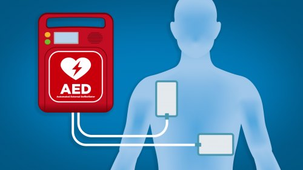
Desfibrilación con DEAParo Cardiorrespiratorio, RCP Básico y Uso de DEA
Si el paciente no responde, no respira con normalidad y no tiene pulso carotídeo en un máximo de 10 segundos:
1. Activa de inmediato la Clave Azul y solicita Carro de Paro junto con el Desfibrilador Externo Automático.
2. Inicia compresiones torácicas sobre una superficie rígida, colocando la tabla de paro bajo el tórax si el paciente está en camilla.
• Posición de manos: Talón de una mano en el centro del pecho sobre la mitad inferior del esternón y la otra mano encima entrelazando los dedos, con los brazos completamente rectos.
• Frecuencia: 100 a 120 compresiones por minuto.
• Profundidad: 5 a 6 cm, evitando superar los 6 cm.
• Reexpansión: Permite que el tórax vuelva por completo a su posición tras cada compresión sin quedarte apoyado encima.
• Ciclos: 30 compresiones por 2 ventilaciones usando bolsa-mascarilla Ambú conectada a oxígeno a 15 L/min y sellando con técnica C-E. Minimiza las interrupciones a menos de 10 segundos y releva al reanimador cada 2 minutos.
1. Enciende el DEA apenas llegue y sigue sus indicaciones de voz.
2. Descubre y seca el tórax; rasura solo si el exceso de vello impide que los parches peguen y evita colocarlos directamente sobre un marcapasos subcutáneo.
3. Adhiere los parches en región subclavicular derecha y línea axilar media izquierda.
4. Indica en voz alta que nadie toque al paciente durante el análisis del ritmo y antes de presionar el botón de descarga.
5. Reanuda las compresiones torácicas inmediatamente después de la descarga.
- Nunca ingreses el Carro de Paro, tubos de oxígeno ferromagnéticos ni el DEA a la Zona IV donde está el imán. Ante un paro en RM, saca de inmediato al paciente hacia la Zona III en camilla amagnética antes de comenzar la reanimación avanzada.
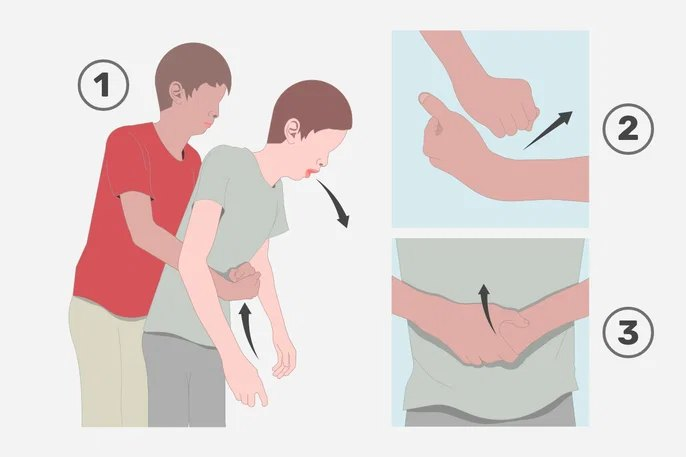
Compresiones AbdominalesObstrucción de la Vía Aérea por Cuerpo Extraño
La obstrucción de la vía aérea puede presentarse durante estudios contrastados orales como trago de bario o contraste hidrosoluble en pacientes con disfagia, por prótesis dentales sueltas o al ingerir alimentos tras un ayuno prolongado.
• Signos: Tos fuerte y efectiva, el paciente logra hablar o emitir sonidos y mantiene entrada de aire.
• Manejo: No golpees su espalda ni intervengas físicamente; anímalo a seguir tosiendo con fuerza hasta expulsar el cuerpo extraño y mantén vigilancia continua.
• Signos: Signo universal de asfixia llevando ambas manos al cuello, incapacidad para hablar, tos débil o silenciosa, estridor agudo y cianosis facial.
• Maniobra de Heimlich: Ubícate detrás del paciente, rodea su cintura, coloca tu puño cerrado con el pulgar hacia adentro justo por encima del ombligo y bajo el apéndice xifoides, cubre con la otra mano y aplica compresiones rápidas hacia adentro y hacia arriba en forma de J hasta desobstruir o hasta que pierda la conciencia. En embarazadas o personas obesas se realizan compresiones torácicas en el centro del esternón.
- Recuéstalo con cuidado en el suelo, activa Clave Azul e inicia RCP con ciclos de 30 compresiones y 2 ventilaciones, revisando visualmente la boca antes de ventilar para retirar el objeto solo si es visible y accesible.
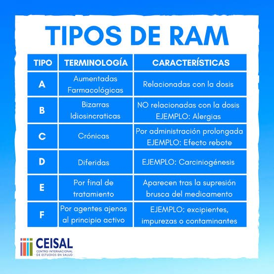
Clasificación Clínica RAM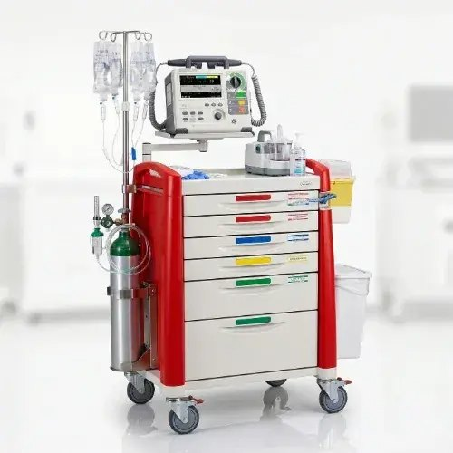
Carro de Paro y OxígenoReacciones Adversas a Medios de Contraste
• Signos: Náuseas, vómito aislado, sensación de calor generalizado, sabor metálico, urticaria localizada leve, prurito leve o estornudos.
• Manejo: Tranquiliza al paciente, conserva la vía venosa permeable, observa su evolución durante 20 a 30 minutos y avisa al médico radiólogo o enfermería.
• Signos: Urticaria generalizada, eritema difuso, edema facial leve sin dificultad respiratoria, broncoespasmo leve, hipotensión moderada y taquicardia.
• Manejo: Detén de inmediato la administración, avisa al médico radiólogo y enfermería, administra oxígeno por mascarilla, controla signos vitales y prepara antihistamínicos, corticoides o broncodilatadores según indicación médica.
• Signos: Edema laríngeo con estridor, ronquera y disnea severa, broncoespasmo grave, hipotensión profunda, cianosis y compromiso de conciencia.
• Manejo: Activa Clave Azul al instante, acerca Carro de Paro y DEA, permeabiliza la vía aérea, administra oxígeno al 100%, posiciona en decúbito supino con piernas elevadas y asiste en la administración urgente de Adrenalina y fluidoterapia.
- Revisa siempre el cuestionario de seguridad antes de inyectar contraste yodado o Gadolinio, verificando alergias previas, asma y función renal.
- Nunca retires la bránula apenas termina el escaneo; mantenla unos minutos hasta confirmar que no aparezcan reacciones agudas.
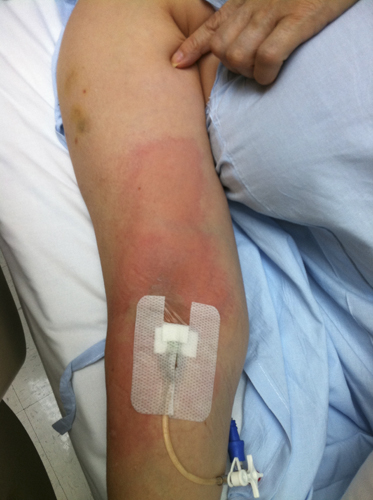
Evaluación Sitio Punción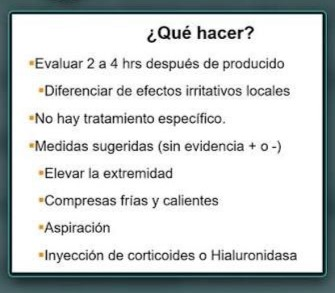
Manejo LocalExtravasación de Medio de Contraste Endovenoso
Se sospecha ante un aumento brusco en la curva de presión de la bomba inyectora, dolor urente o ardor referido por el paciente en el sitio de punción, aumento de volumen local, induración y palidez o enrojecimiento de la piel.
1. Detén de inmediato la bomba inyectora.
2. Da aviso al profesional médico y de enfermería a cargo.
3. Aspira suavemente el mayor volumen residual posible a través del catéter antes de retirarlo.
4. Retira la bránula y comprime con suavidad hasta lograr hemostasia.
5. Eleva la extremidad afectada por encima del nivel del corazón para favorecer el drenaje.
6. Aplica compresas frías envueltas en un paño durante 15 a 20 minutos para reducir el edema y el dolor.
- Evalúa siempre la perfusión distal revisando pulso radial, llene capilar menor a 2 segundos, temperatura y sensibilidad de los dedos. Si notas dolor intenso progresivo, frialdad, hormigueo o ampollas, el paciente requiere evaluación médica urgente.
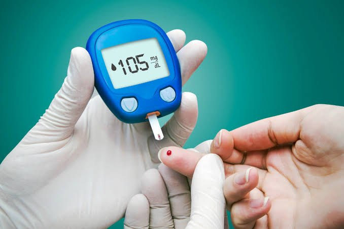
Control de GlicemiaLipotimia, Síncope Vasovagal e Hipoglicemia por Ayuno
• Causas frecuentes en sala: Ansiedad, temor a punciones o espacios cerrados en Resonancia, permanecer mucho rato de pie en radiografías de columna o incorporarse muy rápido tras estar acostado.
• Signos: Palidez, sudoración fría, mareos, visión borrosa, bradicardia e hipotensión transitoria.
• Manejo: Sostén al paciente para evitar que caiga, recuéstalo en decúbito supino, eleva sus piernas entre 30° y 45°, suelta prendas ajustadas y controla signos vitales hasta que se recupere por completo.
• Causas frecuentes en sala: Ayuno prolongado previo a TC, RM o Ecografía en pacientes diabéticos que igualmente se aplicaron insulina o tomaron hipoglicemiantes.
• Signos: Temblor fino, sudoración fría, palpitaciones, hambre, irritabilidad, confusión o pérdida de conciencia.
• Manejo si está Consciente con Regla del 15: Administra 15 g de carbohidratos simples por vía oral, como medio vaso de jugo azucarado o 3 cucharaditas de azúcar disueltas en agua, y controla hemoglucotest a los 15 minutos.
• Manejo si está Inconsciente o Confuso: No des líquidos ni alimentos por boca; ubícalo en posición lateral de seguridad y avisa para administración endovenosa de Suero Glucosado al 30%.
- Agenda a primera hora de la mañana a los pacientes diabéticos que requieren ayuno y acompáñalos siempre al bajar de la camilla.
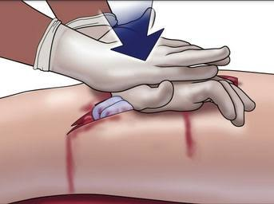
Control de HemorragiaControl de Hemorragias, Estado de Shock y Caídas en Sala
Pueden ocurrir en pacientes politraumatizados derivados desde Urgencia, tras biopsias guiadas por imagen o por retiro accidental de vías venosas:
1. Ponte guantes de procedimiento antes de actuar.
2. Aplica presión directa y firme sobre el punto sangrante con gasas o apósitos estériles.
3. Si el primer apósito se empapa de sangre, no lo retires para no desprender el coágulo formado; coloca otro apósito encima y mantén un vendaje compresivo.
4. Eleva la extremidad afectada siempre que no exista sospecha de fractura.
• Signos de Alarma: Piel pálida, fría y pegajosa; pulso rápido y débil sobre 100 lpm; respiración rápida y superficial; hipotensión; sed intensa, ansiedad o letargo.
• Manejo: Mantén al paciente acostado en decúbito supino, controla la causa del sangrado o reacción, abrígalo para evitar hipotermia, no le des líquidos por boca y solicita intervención médica urgente.
• Actuación: No levantes bruscamente al paciente del suelo. Evalúa su estado de conciencia, dolor localizado, deformidad de extremidades o posible golpe en la cabeza. Avisa de inmediato al médico de turno para su evaluación clínica y notificación del evento adverso.
- Usa siempre barandas o cinturones de sujeción en camillas de TC y RM, frena las ruedas antes de cada transferencia y nunca dejes solo en la mesa a niños, adultos mayores o pacientes sedados.
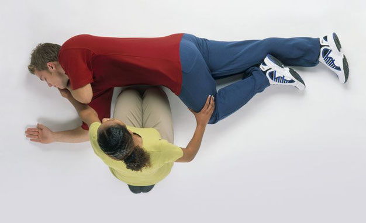
Posición Lateral SeguridadCrisis Convulsiva y Posición Lateral de Seguridad
1. Mantén la calma, pide ayuda al equipo clínico y controla el tiempo de duración del episodio.
2. Evita que el paciente caiga de la camilla o se golpee contra el equipo, colocando un cojín o prenda blanda bajo su cabeza.
3. Despeja objetos cercanos y suelta prendas apretadas alrededor del cuello.
4. Cuando terminen los movimientos convulsivos, coloca al paciente en Posición Lateral de Seguridad para mantener permeable la vía aérea y evitar broncoaspiración de saliva o vómito, vigilando respiración y pulso.
- No introduzcas dedos, bajalenguas ni ningún objeto en la boca del paciente.
- No sujetes ni fuerces sus extremidades durante las sacudidas, ya que puedes provocar luxaciones o fracturas.
- No administres agua ni medicamentos orales mientras esté somnoliento o desorientado.
- Si la crisis convulsiva dura más de 5 minutos o se repiten crisis seguidas sin que el paciente recupere la conciencia entre ellas, activa Clave Azul de inmediato.